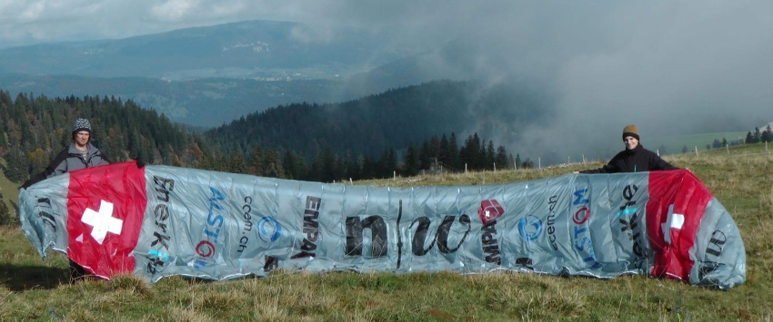

Context
This thesis began in early 2012, when I applied for an Erasmus grant and contacted the University of Applied Sciences Northwestern Switzerland (FHNW) to find a topic for my Bachelor’s thesis.
That is how I met Corey Houle, leader of the SwissKitePower project, and found a real project I wanted to join.
I joined the team in October 2012. The ground station was already built but still being improved. As it was my first time in a team like this, I split the thesis into two parts.
First I worked on the overhead power line while learning how the project worked. Later I focused on the real ground station to study power consumption and losses, so the thesis would satisfy both universities.
